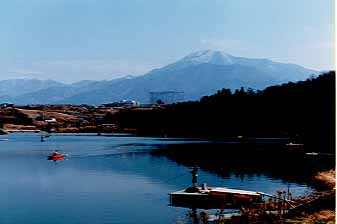

釣行日誌 故郷編
1998/10 渓流シーズンオフ突入、身を持て余す日々
突如として仕事が忙しくなったので、もう今までのように一回の釣行の日誌をまめに書けなくなりました。（単に、不精なだけですが.....）
そこで、月刊書きなぐり日誌ということで、日々の雑事を書き留めて行きます。
98/10/03（土） 中津川市 ひょうたん湖管理釣り場
いやぁ、今年も管理釣り場のシーズンがやってきました。渓流が終わっても身を持て余すことはなかったですね。（笑）
朝５時に駐車場に着くと、はや、10台ほど車が止まっている。うーん！と思いつつ桟橋にはだれもいなかったので、川本君と先端に陣を構える。
朝６時から夕方５時までロッドを振りまくったのに、私がキャッチしたのは３尾のみ。まだ表層水温が22～24と高いので、魚に食い気がなかったようです。 でも、今日は川本君に借りた3/4番バンブーロッドで１尾ニジマスを釣って、その感触の素晴らしさにココロを奪われてしまいました。グリップから伝わる鱒の身震いがとてもダイレクトに感じられます。たしかに管理釣り場でちょっと遠目を狙うにはキャスティングを慎重に行う必要がありますが、それをさしおいても楽しい竿でした。

また、秋が深まって、桟橋に霜の降りる頃に来ることにして家路へつきました。
98/10/25（土） 中津川市 ひょうたん湖管理釣り場
三日続いた出張から帰ると無性に釣りがしたくなり、眠れないのであきらめてフライを３本巻いて釣り具をおっとり刀で車に積み込み深夜のドライブへ。
朝５時半の釣り場の駐車場はすでに20台ほどの車が泊まり、支度を整える釣り人たちの熱気でムンムン。
さすがに桟橋の上も盛況で、中ほどの位置に陣取って釣り始める。しかし、相変わらずの高水温（表層にて18度）であり、魚もムラッ気ばかりで会心の釣りではない。
一日粘って４尾釣れた。（釣ったと言うより出会い頭で釣れてしまった感じ） 交通事故ですね、この感覚は。
夕方になり、ちょっとお手洗い....と思い、キャストしたラインとロッドを立てたままトイレに向かう。虫の知らせかふと振り返るとマーカーが大きく動いて沈み込んでいる。あれ？隣の人のか？ と思って見ていると、私のロッドの先端がぶるぶると震えながら引き込まれている！ あわてて戻って竿を上げたが時すでに遅し。（笑）
やはり油断をしてはいけませんね。しかし、管理釣り場のマーカー釣りは、なぜかふと気を抜いたときに限ってアタリがあるのですね。（笑）
なにか、殺気の消える瞬間があるのでしょうか？
けど、ロッドを椅子に引っかけておいて良かったです。桟橋にそのまま置いていたらリールもろとも湖底に消えていたところでした。
ある人から聞いた話では、この釣り場の桟橋周辺には10本近いロッドが沈んでいるそうです。（笑）
ということで、10月の釣行は、管理釣り場へ２回でした。ぜんぜん身を持て余していませんね。（笑）
さて、今月の教訓は、
俊敏な反射で、確実なフッキングを!
投げたフライは引き上げるまで油断しない!
ということでした。
釣行日誌 故郷編 目次へ
サイトマップ
ホームへ
お問い合わせ